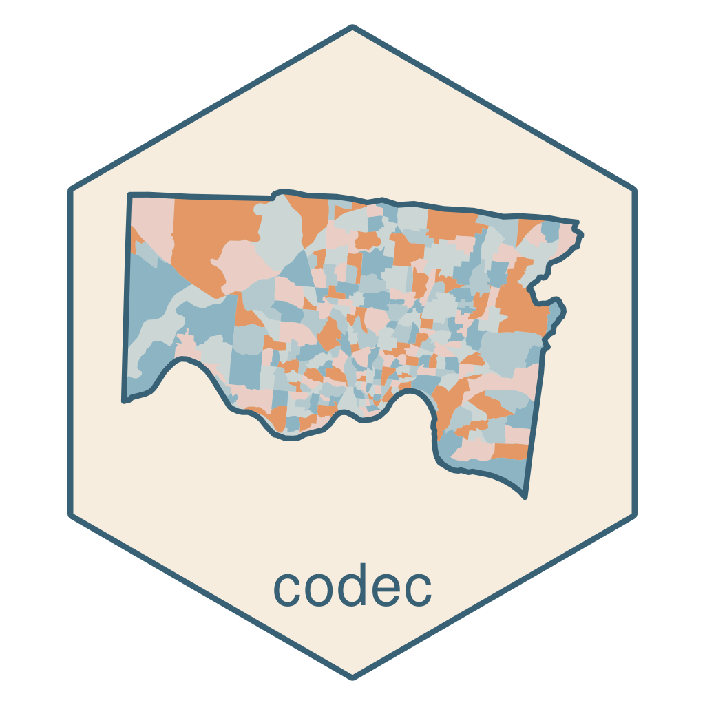

Reading and writing tabular data resources
Source:vignettes/reading-writing-tdr.Rmd
reading-writing-tdr.RmdWriting a tabular-data-resource to disk
Following our example, once metadata is set in the tibble’s attributes, we can save the tabular data resource as a CSV file with an accompanying tabular-data-resource.yaml:
The name attribute of the supplied tibble is used as the
name of a newly created folder and CSV file containing the
data. Metadata extracted from the supplied tibble’s attributes is saved
in a tabular-data-resource.yaml file that lives alongside
the data file in the newly created directory:
fs::dir_tree("mydata")
#> mydata
#> ├── mydata.csv
#> └── tabular-data-resource.yamlAdditionally, the profile is set to
tabular-data-resource and included in the metadata. This
allows for reading, modifying, and writing tabular-data-resources with
other software as well.
(To save just the tabular-data-resource.yaml file, use
write_tdr().)
Reading a tabular-data-resource from disk or the web
Since the tabular-data-resource.yaml file defines the
relative location of the CSV data file in the path
attribute, specifying this file (or the folder that contains it) is
enough to read a tabular-data-resource from disk and restore its
attributes and column classes in R:
mydata <- read_tdr_csv("mydata")
mydata
#> # A tibble: 3 × 6
#> id date measure rating ranking impt
#> <chr> <date> <dbl> <fct> <int> <lgl>
#> 1 A01 2022-07-25 12.8 good 14 FALSE
#> 2 A02 2018-07-10 13.9 best 17 TRUE
#> 3 A03 2013-08-15 15.6 best 19 TRUE
glimpse_tdr(mydata)
#> $attributes
#> # A tibble: 6 × 2
#> name value
#> <chr> <chr>
#> 1 profile tabular-data-resource
#> 2 name mydata
#> 3 path mydata.csv
#> 4 version 0.1.0
#> 5 title My Data
#> 6 homepage https://geomarker.io/CoDEC
#>
#> $schema
#> # A tibble: 6 × 5
#> name title description type constraints
#> <chr> <chr> <chr> <chr> <chr>
#> 1 id Identifier unique identifier string NA
#> 2 date Date date of observation date NA
#> 3 measure Measure measured quantity number NA
#> 4 rating Rating ordered ranking of observation string good, better…
#> 5 ranking Ranking rank of the observation integer NA
#> 6 impt Important true if this observation is important boolean NAIf the tdr_file is a URL, then the tabular-data-resource
and CSV data files are automatically downloaded first:
lndcvr <-
read_tdr_csv("https://github.com/geomarker-io/hamilton_landcover/releases/download/v0.1.0"
)
glimpse_tdr(lndcvr) |>
knitr::kable()
|
|
Reading and writing just the metadata for a tabular-data-resource
It can be useful to read or download the metadata associated with a
tabular-data-resource object. The read_tdr() function does
this, and returns a list with two items: (1) the tabular-data-resource
metadata list and (2) the file path or URL to the data file, generated
by expressing the path relative to how the location of the
tabular-data-resource.yaml file was specified.
read_tdr("mydata") |>
str(2)
#> List of 2
#> $ tdr :List of 7
#> ..$ profile : chr "tabular-data-resource"
#> ..$ name : chr "mydata"
#> ..$ path : chr "mydata.csv"
#> ..$ version : chr "0.1.0"
#> ..$ title : chr "My Data"
#> ..$ homepage: chr "https://geomarker.io/CoDEC"
#> ..$ schema :List of 1
#> $ csv_file: 'fs_path' chr "mydata/mydata.csv"This would return a different csv_file if the
tabular-data-resource had been specified using an absolute file path;
e.g., read_tdr("~/code/CoDEC/tests/testthat/d")
This also works with a URL:
read_tdr("https://github.com/geomarker-io/hamilton_landcover/releases/download/v0.1.0") |>
str(4)
#> List of 2
#> $ tdr :List of 8
#> ..$ profile : chr "tabular-data-resource"
#> ..$ name : chr "hamilton_landcover"
#> ..$ path : chr "hamilton_landcover.csv"
#> ..$ version : chr "0.1.0"
#> ..$ title : chr "Hamilton County Landcover and Built Environment Characteristics"
#> ..$ description: chr "Greenspace, imperviousness, treecanopy, and greenness (EVI) for all tracts in Hamilton County"
#> ..$ homepage : chr "https://geomarker.io/hamilton_landcover"
#> ..$ schema :List of 1
#> .. ..$ fields:List of 5
#> .. .. ..$ census_tract_id :List of 3
#> .. .. ..$ pct_green_2019 :List of 4
#> .. .. ..$ pct_impervious_2019:List of 4
#> .. .. ..$ pct_treecanopy_2016:List of 4
#> .. .. ..$ evi_2018 :List of 4
#> $ csv_file: chr "https://github.com/geomarker-io/hamilton_landcover/releases/download/v0.1.0/hamilton_landcover.csv"